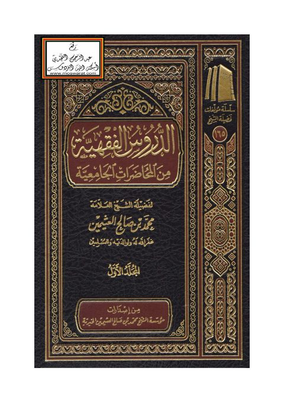

الدروس الفقهية من المحاضرات الجامعية
Authors: محمد بن صالح العثيمين
Publishers: مؤسسة الشيخ محمد بن صالح العثيمين الخيرية
Download Downloads need an internet connection.
- Published
- 1438هـ 2017م
- Country
- عنيزة، السعودية
- Edition
- 1
- Volumes
- 3
- Pages
- 2261
- Type
- كتاب
- Category
- الفقه وأصوله
Description
**▫️ العنوان: الدروس الفقهية من المحاضرات الجامعية** ▪️ المؤلف: #محمد_بن_صالح_العثيمين ▫️ الناشر: #مؤسسة_الشيخ_محمد_بن_صالح_العثيمين ▪️ تاريخ النشر: 1438هـ 2017م ▫️ بلد النشر: عنيزة، #السعودية ▪️ الطبعة: 1 ▫️ عدد الأجزاء: 3 ▪️ الصفحات: 2261 ▫️ نوع الوعاء: #كتاب ▪️ التصنيف الرئيسي: #الفقه_وأصوله ۪